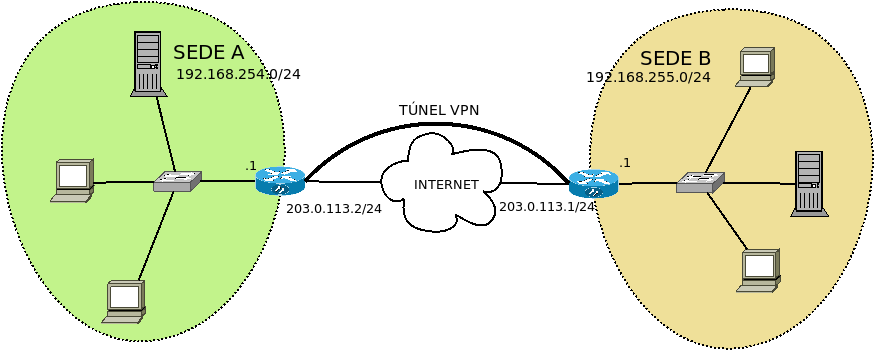

7.4. Redes VPN¶
Una red privada virtual (VPN) consiste en la conexión de dos nodos remotos, (por lo general separados por la internet pública), de manera que ambos se comporten como una única red local. Esto se logra estableciendo una conexión virtual punto a punto.
Dado que la comunicación atraviesa internet la comunicación es cifrada y, además, se habilitan mecanismos para poder asegurar la identidad del otro lado.
En la práctica, el establecimiento de un túnel VPN genera interfaces virtuales en cliente y servidor que virtualmente comunican ambos cómo si realmente un cable los comunicara.
Hay cuatro aspectos a tener en cuenta al establecer estas redes:
- Capa de implementación del túnel
El túnel puede establecerse en la capa de enlace con lo que ambos extremos se encontrarán en la misma red; o bien puede establecerse en la capa de red lo que determina que los segmentos local y remoto pertenezcan a redes distintas.
En el primer caso, el establecimiento en capa 2 supone que las interfaces virtuales creadas sean interfaces tipo TAP que operan con paquetes de capa 2 (o sea, tramas) como ethernet. En el segundo caso, las interfaces creadas serán de tipo TUN, que operan en capa 3 con paquetes IP,
- Naturaleza del cliente
- Éste puede ser un equipo móvil (lo que en la jerga se llama road warrior) que se conecta para participar en la red local de la sede en la que se encuentra el servidor; o bien, el propósito de establecer el túnel pueda ser el de comunicar dos sedes entre sí de modo que el cliente no es un cliente aislado sino toda una red remota (una sede) que se desea sumar a la sede del servidor.
- Autenticación del cliente
- Puede hacerse con certificado digital emitido por el servidor; o bien, mediante el uso de usuario y contraseña.
- Tipo de certificado de servidor
El certificado de servidor podemos obtenerlo a través de una entidad certificadora como Let’s Encrypt, o bien, crear nosotros una entidad certificadora y con élla acreditar el certificado del servidor.
Nota
Esta misma entidad se encarga de acreditar también los certificados de los clientes, por lo que si nuestra intención es usarlos como método de autenticación para clientes, deberemos olvidarnos de usar Let’s Encrypt.
En el estudio trataremos cómo establecer redes VPN entre una sede y un equipo móvil o entre dos sedes; y para ambos casos se implementará la conexión en capa de enlace y de red. Son, por tanto, cuatro casos posibles. Para no multiplicar en exceso los casos, implementaremos la autenticación de clientes con certificado y la generación del certificado de servidor mediante entidad certificadora, en los casos de conexión entre dos sedes y la autenticación con usuario y contraseña y certificado de Let’s Encrypt en los casos de conexión entre equipo móvil y sede.
Nota
La configuracion «sede-equipo móvil» implementada en capa 3, por ser la primera que se desarrolla tiene la configuración abundantemente comentada. Muchos de estos comentarios son pertinentes en las restantes configuraciones, pero no se repiten. Échele un ojo a esta configuración, aunque no sea la que usted pretende.
Posiblemente, no todos los casos sean igual de pertinentes y nos convendrá elegir uno u otro según sean nuestras necesidades:
- Cuando se pretende conectar con la sede central equipos móviles, hacer que el estos equipos se encuentren en la misma red no suele aportar nada, pero en cambio sí que aumenta el tráfico (p.e. los paquetes de broadcast circularán por el túnel). En consecuencia, lo natural es que las conexiones sede-equipo móvil sean conexiones en capa de red.
- Por el contrario en conexiones sede-sede:
- Si en la sede del servidor se encuentran centralizados todos los servicios, de nuevo no aporta gran cosa que la sucursal se encuentre en la misma red, por lo que lo lógico es que se estableca el túnel en capa de red.
- En cambio, si las sucursales también aportan servicios, esto querrá decir que necesitaremos acceder desde cualquier máquina a máquinas concretas de otras sedes. Para ello, lo más fácil es situar todas las máquinas en la misma red y, por tanto, establecer una conexión en capa de enlace.
Contenidos